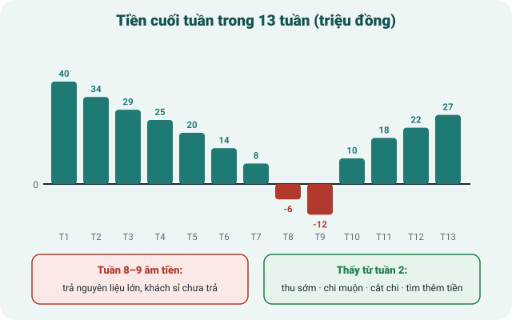

K5 · Lập kế hoạch và giữ cam kết công việc › Bậc 3 Vững vàng
Những con số sống còn: dòng tiền, hòa vốn, biên lợi nhuận
Bài này làm Tờ 4: Bảng dòng tiền 13 tuần và ba con số. Mẫu in. Bài dạy cách nhìn số để ra quyết định, không phải kế toán hay tư vấn thuế. Tài chính gia đình có ở daynentang.com.
1. Mục tiêu
- Lập dự báo dòng tiền 13 tuần và chỉ ra tuần có nguy cơ âm tiền.
- Tính ba con số: biên lợi nhuận gộp, điểm hòa vốn, số tháng còn trụ được.
2. Khởi động truy xuất
- Câu "nếu… thì…" trong kế hoạch 90 ngày dùng để làm gì?
- Phần nào của phiếu rút kinh nghiệm quan trọng nhất?
Đáp án
- Để quyết trước cách xử lý một trở ngại, khi còn bình tĩnh.
- Hành động trong 48 giờ.
Xem lại: Chủ động, phục hồi.
3. Giải thích
Doanh nghiệp nhỏ thường không chết vì lỗ trên sổ. Chúng chết vì hết tiền mặt trước khi khách trả tiền.
Lãi khác với tiền. Bạn bán được 50 triệu đồng tháng này. Nhưng khách trả sau 45 ngày. Tiền thuê nhà phải trả ngay. Trên sổ có lãi, trong túi không có tiền.
Dự báo dòng tiền 13 tuần. Mỗi tuần một cột:
Mỗi cột của bảng dòng tiền
- Tiền đầu tuầnTiền thật đang có, bằng tiền cuối tuần trước.
- Tiền vàoGhi vào tuần tiền về thật, không phải tuần bán.
- Tiền raThuê, lương, nguyên liệu, trả nợ, thuế.
- Tiền cuối tuầnĐầu tuần + vào − ra. Âm là báo động.
Mười ba tuần là khoảng một quý. Đủ xa để thấy trước nguy cơ, đủ gần để đoán khá sát. Cập nhật mỗi tuần, thay số dự báo bằng số thật.
Ba con số cần thuộc.
- Biên lợi nhuận gộp = (giá bán − chi phí trực tiếp mỗi đơn vị) ÷ giá bán. Chi phí trực tiếp là nguyên liệu, bao bì, phí giao.
- Điểm hòa vốn = chi phí cố định mỗi tháng ÷ lãi gộp mỗi đơn vị. Chi phí cố định là khoản phải trả dù bán ít hay nhiều.
- Số tháng còn trụ = tiền hiện có ÷ số tiền mất ròng mỗi tháng.

Khi thấy tuần âm tiền, có bốn cách: thu sớm hơn, chi muộn hơn, cắt chi, hoặc tìm thêm tiền. Thấy sớm thì có nhiều lựa chọn. Thấy muộn thì chỉ còn đi vay gấp.
Tách tiền. Dùng tài khoản riêng cho kinh doanh. Trộn với tiền gia đình thì không ai biết doanh nghiệp đang lãi hay lỗ.
4. Ví dụ tại nơi làm việc Việt Nam
Tình huống giả định. Anh Duy mở xe bánh mì ở Thủ Đức. Giá bán 25.000 đồng một ổ.
Biên lợi nhuận gộp. Nguyên liệu và bao bì mỗi ổ hết 12.000 đồng. Lãi gộp 13.000 đồng. Biên lợi nhuận gộp là 52%.
Hòa vốn. Chi phí cố định mỗi tháng: thuê chỗ 12 triệu, lương một người phụ 12 triệu, điện nước 2 triệu. Tổng 26 triệu đồng. Hòa vốn là 26.000.000 ÷ 13.000 = 2.000 ổ một tháng. Tức khoảng 67 ổ mỗi ngày, nếu bán 30 ngày.
Hiện anh bán 50 ổ mỗi ngày, tức 1.500 ổ một tháng. Thiếu 500 ổ so với hòa vốn. Mỗi tháng lỗ 500 × 13.000 = 6,5 triệu đồng.
Số tháng còn trụ. Anh còn 26 triệu đồng tiền dự phòng. 26 ÷ 6,5 = 4 tháng.
Anh đặt mốc: trong 2 tháng phải lên 67 ổ mỗi ngày. Nếu không, anh sẽ đổi điểm bán. Anh nhận thêm đơn sỉ cho một văn phòng gần đó. Nhưng văn phòng trả tiền cuối tháng, nên anh ghi tiền vào ở tuần cuối tháng trên bảng 13 tuần.
Vì sao cách này tốt: anh biết chính xác mình còn bao lâu, và cần bán thêm bao nhiêu. Quyết định đổi điểm có hạn rõ ràng.
5. Thực hành
Tình huống giả định. Chị Lan bán nến thơm online. Giá 150.000 đồng một hũ. Chi phí sáp, tinh dầu, hũ, hộp và phí giao: 90.000 đồng một hũ. Chi phí cố định: 18 triệu đồng một tháng. Hiện bán 200 hũ một tháng. Chị còn 30 triệu đồng.
Tính biên lợi nhuận gộp, điểm hòa vốn và số tháng còn trụ.
Gợi ý 1
Lãi gộp mỗi hũ = 150.000 − 90.000. Hòa vốn = chi phí cố định ÷ lãi gộp mỗi hũ.
Gợi ý 2
Số tiền lỗ mỗi tháng = (số hũ hòa vốn − số hũ đang bán) × lãi gộp mỗi hũ.
Lời giải mẫu
- Lãi gộp mỗi hũ: 60.000 đồng. Biên lợi nhuận gộp: 60.000 ÷ 150.000 = 40%.
- Hòa vốn: 18.000.000 ÷ 60.000 = 300 hũ một tháng.
- Lỗ mỗi tháng: (300 − 200) × 60.000 = 6 triệu đồng.
- Số tháng còn trụ: 30 ÷ 6 = 5 tháng.
- Gợi ý hành động: biên 40% khá mỏng cho hàng online. Chị có thể thử tăng giá, hoặc giảm phí giao bằng cách bán theo combo.
(Thông tin là giả định.)
6. Tự kiểm tra
Chọn đáp án. Mỗi lựa chọn đều có giải thích.
Câu 1. Bạn giao hàng cho khách sỉ ngày 5/3. Khách trả tiền ngày 20/4. Trong bảng dòng tiền, ghi tiền vào ở đâu?
-
Chưa đúng. Đó là tuần bán. Tiền chưa về túi bạn.
-
Đúng. Đúng. Bảng dòng tiền ghi khi tiền về thật.
-
Chưa đúng. Tiền không về theo kiểu chia đều. Ghi như vậy làm bảng sai.
Câu 2. Giá bán 40.000 đồng, chi phí trực tiếp 28.000 đồng. Biên lợi nhuận gộp là bao nhiêu?
-
Chưa đúng. Đây là lãi gộp mỗi đơn vị, chưa chia cho giá bán.
-
Đúng. Đúng. (40.000 − 28.000) ÷ 40.000 = 30%.
-
Chưa đúng. 70% là tỷ lệ chi phí trên giá, không phải biên lợi nhuận.
Câu 3. Chi phí cố định 20 triệu đồng một tháng. Lãi gộp mỗi sản phẩm 50.000 đồng. Điểm hòa vốn là bao nhiêu?
-
Đúng. Đúng. 20.000.000 ÷ 50.000 = 400.
-
Chưa đúng. Sai một chữ số 0. Kiểm lại phép chia.
-
Chưa đúng. Đã có lãi gộp mỗi sản phẩm, nên đủ để tính hòa vốn.
Câu 4. Bảng 13 tuần cho thấy tuần 9 sẽ âm 15 triệu đồng. Hôm nay là tuần 2. Nên làm gì?
-
Chưa đúng. Chờ lâu thì chỉ còn cách vay gấp. Thấy sớm là để có nhiều lựa chọn.
-
Đúng. Đúng. Còn 7 tuần, đủ để thương lượng với khách và nhà cung cấp.
-
Chưa đúng. Dự báo không cần chắc tuyệt đối. Nó cần đủ tốt để báo động sớm.
7. Phản tư
- Bạn có biết chính xác chi phí trực tiếp của một sản phẩm của mình không?
- Nếu doanh thu dừng hẳn từ hôm nay, bạn trụ được mấy tháng?
8. Áp dụng thật
Trong 7 ngày tới, lập Tờ 4 với số thật của bạn. Đánh dấu tuần có tiền cuối tuần thấp nhất. Viết một câu "nếu… thì…" cho tuần đó.
Mức bằng chứng. Biên lợi nhuận gộp, điểm hòa vốn và dòng tiền là khái niệm cơ bản của quản trị tài chính. Bảng dự báo 13 tuần là cách làm phổ biến trong quản lý tiền mặt, không phải quy định pháp luật. Cách trình bày và Tờ 4 là đề xuất của site. Khi cần sổ sách theo luật kế toán và thuế, hỏi người làm kế toán.
9. Siêu dữ liệu
| skill | K5 · Lập kế hoạch và giữ cam kết công việc |
|---|---|
| level | Bậc 3 · Vững vàng |
| group | N7 |
| framework_map | EntreComp: Financial and economic literacy; Planning and management; CSfW: 3a Manage own work; SkillsFuture CCS: Self Management; WEF: Analytical thinking (chỉ dẫn chiếu) |
| updated | 2026-11-14 |
Hoàn thành bài
Đánh dấu đã học để site gợi ý lịch ôn sau 1, 3 và 7 ngày. Dữ liệu chỉ lưu trên máy của bạn.
Lịch ôn gợi ý: